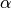
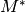
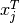
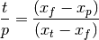
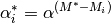

Enrichment – pyne.enrichment¶
The enrichment module contains tools for defining and manipulating enrichment cascades. The Cascade class is a simple container for storing parameters which define and enrichment setup. These include feed, product, and tail materials, target enrichments, and separation factors. The main functions in this modules computes the total flow rate and separation factors from an initial cascade. Other helper function compute relative flow rates and nuclide-specific separation factors.
Cascades¶
- class pyne.enrichment.Cascade¶
This class is a container for enrichment cascade parameters which defines the perfomance of a separations plant. Instances of this class are passed into and out of many enrichment functions.
Parameters : kwargs : optional
Any keyword argument which is supplied is applied as an attribute to this instance.
- alpha¶
The  attribute specifies the overall stage separation factor for the cascade. This should be set on initialization. Values should be greater than one. Values less than one represent de-enrichment.
- Mstar¶
This is the mass separation factor . On initialization, this should be in the ballpark of the optimized result of the Mstar value. However, this must always have a value between the weights of the j and k key components.
- j¶
This is an integer in id-form that represents the jth key component. This nuclide is preferentially enriched in the product stream. For standard uranium cascades j is 922350 (ie U-235).
- k¶
This is an integer in id-form that represents the kth key component. This nuclide is preferentially enriched in the tails stream. For standard uranium cascades k is 922380 (ie U-238).
- N¶
The number of enriching stages.
- M¶
The number of stripping stages.
- x_feed_j¶
This is the target enrichment of the jth isotope in the feed stream mat_feed. The
 value should be
set prior to solving for the remainder of the cascade. For
typical uranium vectors, this value is about U-235 = 0.00711.
value should be
set prior to solving for the remainder of the cascade. For
typical uranium vectors, this value is about U-235 = 0.00711.
- x_prod_j¶
This is the target enrichment of the jth isotope in the product stream mat_prod. The
 value should be
set prior to solving for the remainder of the cascade. For
typical uranium vectors, this value is about U-235 = 0.05.
value should be
set prior to solving for the remainder of the cascade. For
typical uranium vectors, this value is about U-235 = 0.05.
- x_tail_j¶
This is the target enrichment of the jth isotope in the Tails stream mat_tail. The  value should be set prior to solving for the remainder of the cascade. For typical uranium vectors, this value is about U-235 = 0.0025.
- mat_feed¶
Feed material to be enriched. Often set at initialization.
- mat_prod¶
Product (enriched) material.
- mat_tail¶
Tails (de-enriched) material.
- l_t_per_feed¶
Total flow rate () per feed flow rate. This is a characteristic of the cascade as a whole. As such it is this quatity which is minimized in any real cascade.
- swu_per_feed¶
The seperative work units (SWU) per unit mass of feed material.
- swu_per_prod¶
The seperative work units (SWU) per unit mass of prod material.
- pyne.enrichment.default_uranium_cascade()¶
Returns a copy of a default uranium enrichment cascade, which has sensible initial values for this very common case.
The values of this instance of Cascade are as follows:
duc = pyne.enrichment.Cascade(N=30.0, M=10.0, alpha=1.05, Mstar=236.5, j=922350, k=922380, x_feed_j=0.0072, x_prod_j=0.05, x_tail_j=0.0025, l_t_per_feed=0.0, swu_per_feed=0.0, swu_per_prod=0.0, mat_feed=pyne.material.Material({922340: 5.5e-05, 922350: 0.0072, 922380: 0.992745}, 1.0, 'Natural Uranium', 1.0), mat_prod=pyne.material.Material({}, -1.0, '', -1.0), mat_tail=pyne.material.Material({}, -1.0, '', -1.0))
Returns : duc : Cascade
As defined above.
Enrichment Solvers¶
- pyne.enrichment.multicomponent(orig_casc, solver="symbolic", tolerance=1.0E-7, max_iter=100)¶
Calculates the optimal value of Mstar by minimzing the seperative power. The minimizing the seperative power is equivelent to minimizing
 ,
or the total flow rate for the cascade divided by the feed flow rate.
Note that orig_casc.Mstar represents an intial guess at what Mstar might be.
This function is appropriate for feed materials with more than 2 nuclides
(i.e. multicomponent).
,
or the total flow rate for the cascade divided by the feed flow rate.
Note that orig_casc.Mstar represents an intial guess at what Mstar might be.
This function is appropriate for feed materials with more than 2 nuclides
(i.e. multicomponent).Parameters : orig_casc : Cascade
A cascade to optimize.
solver : str, optional
Flag for underlying cascade solver function to use. Current options are either “symbolic” or “numeric”.
tolerance : float, optional
Numerical tolerance for underlying solvers, default=1E-7.
max_iter : int, optional
Maximum number of iterations for underlying solvers, default=100.
Returns : casc : Cascade
A new cascade object, copied from the original, which has been optimized to minimize flow rates. Correct values of product and tails materials are also computed on this instance.
- pyne.enrichment.solve_numeric(orig_casc, tolerance=1.0E-7, max_iter=100)¶
Calculates the total flow rate () over the feed flow rate (
 ).
).Parameters : orig_casc : Cascade
A cascade to compute the l_t_per_feed, swu_per_feed, swu_per_prod, mat_prod, and mat_tail attributes for.
tolerance : float, optional
Numerical tolerance for solvers, default=1E-7.
max_iter : int, optional
Maximum number of iterations for underlying solvers, default=100.
Returns : casc : Cascade
A new cascade object, copied from the original, with the appropriate attributes computed.
- pyne.enrichment.solve_symbolic(orig_casc)¶
Computes the cascade parameters based on a given initial state.
Parameters : orig_casc : Cascade
A cascade to compute the l_t_per_feed, swu_per_feed, swu_per_prod, mat_prod, and mat_tail attributes for.
Returns : casc : Cascade
A new cascade object, copied from the original, with the appropriate attributes computed.
Helper Functions¶
- pyne.enrichment.prod_per_feed(x_feed, x_prod, x_tail)¶
Calculates the product over feed enrichment ratio.
Parameters : x_feed : float
Feed enrichment.
x_prod : float
Product enrichment.
x_tail : float
Tails enrichment.
Returns : pfratio : float
As calculated above.
- pyne.enrichment.tail_per_feed(x_feed, x_prod, x_tail)¶
Calculates the tails over feed enrichment ratio.
Parameters : x_feed : float
Feed enrichment.
x_prod : float
Product enrichment.
x_tail : float
Tails enrichment.
Returns : tfratio : float
As calculated above.
- pyne.enrichment.tail_per_prod(x_feed, x_prod, x_tail)¶
Calculates the tails over product enrichment ratio.

Parameters : x_feed : float
Feed enrichment.
x_prod : float
Product enrichment.
x_tail : float
Tails enrichment.
Returns : tpratio : float
As calculated above.
- pyne.enrichment.alphastar_i(alpha, Mstar, M_i)¶
Calculates the stage separation factor for a nuclide i of atomic mass .

Parameters : alpha : float
Stage separation factor.
Mstar : float
Mass separation factor.
M_i : float
Atomic mass of the ith nuclide.
Returns : astar_i : float
As calculated above.

Table Of Contents
Previous topic
Serpent Support – pyne.serpent
Next topic
Utility Functions – pyne.utils